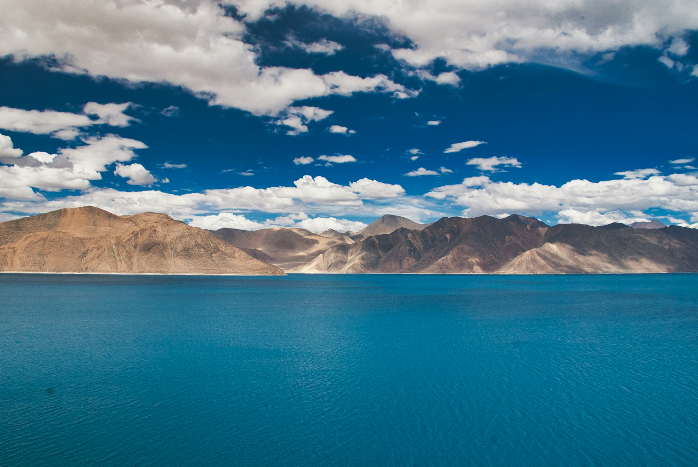
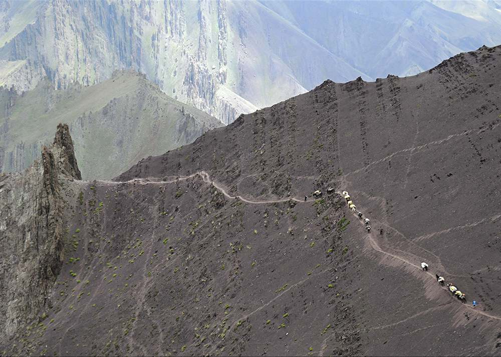

03 — Nature
Scenic & Nature Tours
Off-road safaris across the Changthang plateau to Ladakh's high-altitude lakes, wide open valleys, and the wildlife that calls them home.
Beyond the monasteries and market towns, Ladakh opens into vast high-altitude wilderness — salt lakes ringed by snow peaks, wind-scoured plains, and valleys where herds of kiang (the Tibetan wild ass) and blue sheep still roam freely.
We take you off the main roads on jeep safaris to Tso Kar and Tso Moriri, two of the region's great high-altitude lakes, and into the Changthang plateau where nomadic herders still graze pashmina goats much as they have for centuries.
These tours suit travellers who want Ladakh's landscapes at a slower pace — long drives with plenty of stops, golden light on the water, and camps or homestays under some of the clearest night skies in the world.
Plan Your Safari
- Format4x4 off-road safari
- HighlightsTso Kar, Tso Moriri
- WildlifeKiang, blue sheep
- Duration1 to 5 days
- SeasonMay – October
Gallery
Lakes, plateaus & wildlife

{kind=link}
{kind=link}
{kind=link}
{kind=link}
{kind=link}
{kind=link}
{kind=link}
{kind=link}

Next Steps
See Ladakh's wild side
Tell us how many days you have and we'll build a safari around the lakes, wildlife and plateaus you most want to see.